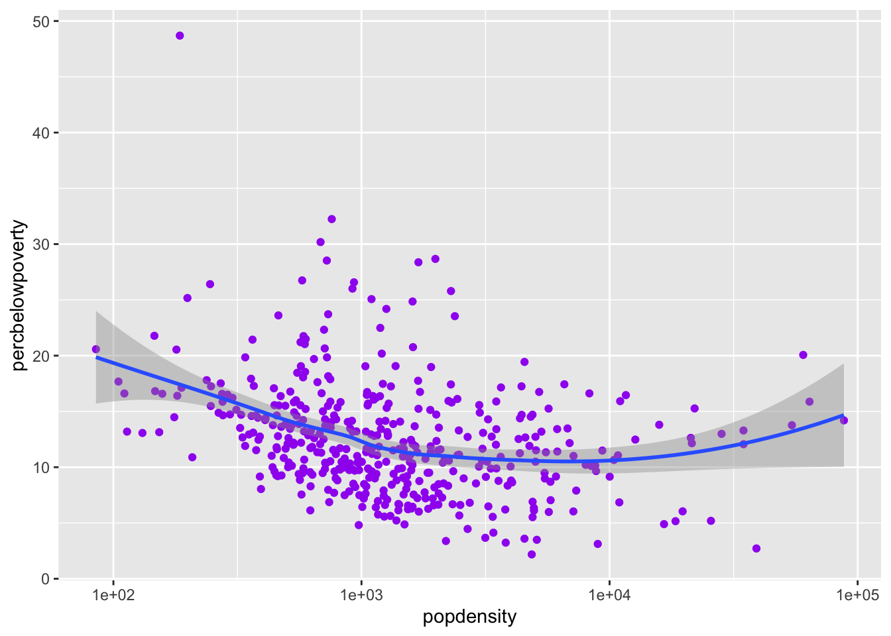

library(tidyverse)
library(gov50data)Gov 50 Cheat Sheet
R Basics (Week 1)
Creating a vector
You can create a vector using the c function:
## Any R code that begins with the # character is a comment
## Comments are ignored by R
my_numbers <- c(4, 8, 15, 16, 23, 42) # Anything after # is also a
# comment
my_numbers[1] 4 8 15 16 23 42Installing and loading a package
You can install a package with the install.packages function, passing the name of the package to be installed as a string (that is, in quotes):
install.packages("ggplot2")You can load a package into the R environment by calling library() with the name of package without quotes. You should only have one package per library call.
library(ggplot2)Calling functions from specific packages
We can also use the mypackage:: prefix to access package functions without loading:
knitr::kable(head(mtcars))| mpg | cyl | disp | hp | drat | wt | qsec | vs | am | gear | carb | |
|---|---|---|---|---|---|---|---|---|---|---|---|
| Mazda RX4 | 21.0 | 6 | 160 | 110 | 3.90 | 2.620 | 16.46 | 0 | 1 | 4 | 4 |
| Mazda RX4 Wag | 21.0 | 6 | 160 | 110 | 3.90 | 2.875 | 17.02 | 0 | 1 | 4 | 4 |
| Datsun 710 | 22.8 | 4 | 108 | 93 | 3.85 | 2.320 | 18.61 | 1 | 1 | 4 | 1 |
| Hornet 4 Drive | 21.4 | 6 | 258 | 110 | 3.08 | 3.215 | 19.44 | 1 | 0 | 3 | 1 |
| Hornet Sportabout | 18.7 | 8 | 360 | 175 | 3.15 | 3.440 | 17.02 | 0 | 0 | 3 | 2 |
| Valiant | 18.1 | 6 | 225 | 105 | 2.76 | 3.460 | 20.22 | 1 | 0 | 3 | 1 |
Data Visualization (week 1)
Scatter plot
You can produce a scatter plot with using the x and y aesthetics along with the geom_point() function.
ggplot(data = midwest,
mapping = aes(x = popdensity,
y = percbelowpoverty)) +
geom_point()Smoothed curves
You can add a smoothed curve that summarizes the relationship between two variables with the geom_smooth() function. By default, it uses a loess smoother to estimated the conditional mean of the y-axis variable as a function of the x-axis variable.
ggplot(data = midwest,
mapping = aes(x = popdensity,
y = percbelowpoverty)) +
geom_point() + geom_smooth()`geom_smooth()` using method = 'loess' and formula 'y ~ x'Adding a regression line
geom_smooth can also add a regression line by setting the argument method = "lm" and we can turn off the shaded regions around the line with se = FALSE
ggplot(data = midwest,
mapping = aes(x = popdensity,
y = percbelowpoverty)) +
geom_point() + geom_smooth(method = "lm", se = FALSE)`geom_smooth()` using formula 'y ~ x'
Changing the scale of the axes
If we want the scale of the x-axis to be logged to stretch out the data we can use the scale_x_log10():
ggplot(data = midwest,
mapping = aes(x = popdensity,
y = percbelowpoverty)) +
geom_point() +
geom_smooth(method = "lm", se = FALSE) +
scale_x_log10()`geom_smooth()` using formula 'y ~ x'
Adding informative labels to a plot
Use the labs() to add informative labels to the plot:
ggplot(data = midwest,
mapping = aes(x = popdensity,
y = percbelowpoverty)) +
geom_point() +
geom_smooth(method = "loess", se = FALSE) +
scale_x_log10() +
labs(x = "Population Density",
y = "Percent of County Below Poverty Line",
title = "Poverty and Population Density",
subtitle = "Among Counties in the Midwest",
source = "US Census, 2000")`geom_smooth()` using formula 'y ~ x'Mapping aesthetics to variables
If you would like to map an aesthetic to a variable for all geoms in the plot, you can put it in the aes call in the ggplot() function:
ggplot(data = midwest,
mapping = aes(x = popdensity,
y = percbelowpoverty,
color = state,
fill = state)) +
geom_point() +
geom_smooth() +
scale_x_log10()`geom_smooth()` using method = 'loess' and formula 'y ~ x'Mapping aesthetics for a single geom
You can also map aesthetics for a specific geom using the mapping argument to that function:
ggplot(data = midwest,
mapping = aes(x = popdensity,
y = percbelowpoverty)) +
geom_point(mapping = aes(color = state)) +
geom_smooth(color = "black") +
scale_x_log10()`geom_smooth()` using method = 'loess' and formula 'y ~ x'Setting the aesthetics for all observations
If you would like to set the color or size or shape of a geom for all data points (that is, not mapped to any variables), be sure to set these outside of aes():
ggplot(data = midwest,
mapping = aes(x = popdensity,
y = percbelowpoverty)) +
geom_point(color = "purple") +
geom_smooth() +
scale_x_log10()`geom_smooth()` using method = 'loess' and formula 'y ~ x'
Histograms
ggplot(data = midwest,
mapping = aes(x = percbelowpoverty)) +
geom_histogram()`stat_bin()` using `bins = 30`. Pick better value with `binwidth`.